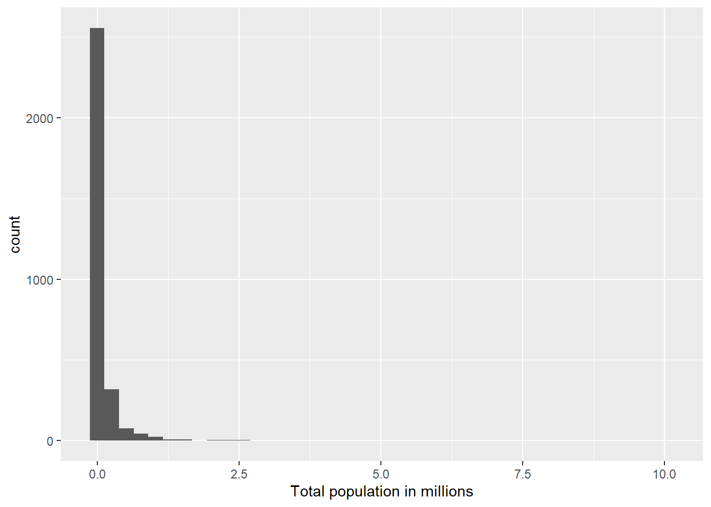
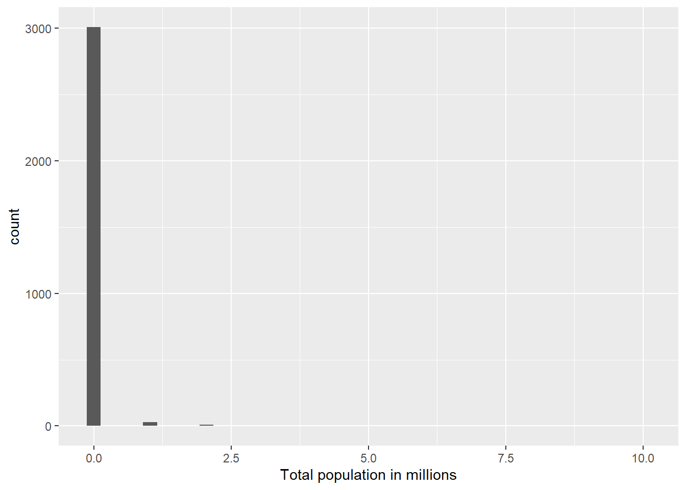

You can download this .qmd file from here. Just hit the Download Raw File button.
Determinants of COVID vaccination rates
First, a little detour to describe several alternatives for reading in data:
If you navigate to my Github account, and find the 264_spring_2025 repo, there is a Data folder inside. You can then click on vacc_Mar21.csv to see the data we want to download. This link should also get you there, but it’s good to be able to navigate there yourself.
Approach 1: create a Data folder in the same location where this .qmd file resides, and then store vaccinations_2021.csv in that Data folder
2
Approach 2: give R the complete path to the location of vaccinations_2021.csv, starting with Home (~)
3
Approach 3: link to our course webpage, and then know we have a Data folder containing all our csvs
4
Approach 4: navigate to the data in GitHub, hit the Raw button, and copy that link
A recent Stat 272 project examined determinants of covid vaccination rates at the county level. Our data set contains 3053 rows (1 for each county in the US) and 14 columns; here is a quick description of the variables we’ll be using:
state = state the county is located in
county = name of the county
region = region the state is located in
metro_status = Is the county considered “Metro” or “Non-metro”?
rural_urban_code = from 1 (most urban) to 9 (most rural)
perc_complete_vac = percent of county completely vaccinated as of 11/9/21
tot_pop = total population in the county
votes_Trump = number of votes for Trump in the county in 2020
votes_Biden = number of votes for Biden in the county in 2020
perc_Biden = percent of votes for Biden in the county in 2020
ed_somecol_perc = percent with some education beyond high school (but not a Bachelor’s degree)
ed_bachormore_perc = percent with a Bachelor’s degree or more
unemployment_rate_2020 = county unemployment rate in 2020
median_HHincome_2019 = county’s median household income in 2019
Consider only Minnesota and its surrounding states (Iowa, Wisconsin, North Dakota, and South Dakota). We want to examine the relationship between the percentage who voted for Biden and the percentage of complete vaccinations by state. Generate two plots to examine this relationship:
A scatterplot with points and smoothers colored by state. Make sure the legend is ordered in a meaningful way, and include good labels on your axes and your legend. Also leave off the error bars from your smoothers.
One plot per state containing a scatterplot and a smoother.
Describe which plot you prefer and why. What can you learn from your preferred plot?
We wish to compare the proportions of counties in each region with median household income above the national median ($69,560).
Fill in the blanks below to produce a segmented bar plot with regions ordered from highest proportion above the median to lowest.
Create a table of proportions by region to illustrate that your bar plot in (a) is in the correct order (you should find two regions that are really close when you just try to eyeball differences).
Explain why we can replace fct_relevel(region, FILL IN CODE) with
vaccine_data |>mutate(HHincome_vs_national =ifelse(median_HHincome_2019 <69560, FILL IN CODE)) |>mutate(region_sort =fct_relevel(region, FILL IN CODE)) |>ggplot(mapping =aes(x = region_sort, fill = HHincome_vs_national)) +geom_bar(position ="fill")
We want to examine the distribution of total county populations and then see how it’s related to vaccination rates.
Carefully and thoroughly explain why the two histograms below provide different plots.
vaccine_data |>mutate(tot_pop_millions = tot_pop /1000000) |>ggplot(mapping =aes(x = tot_pop_millions)) +geom_histogram(bins =40) +labs(x ="Total population in millions")

vaccine_data |>mutate(tot_pop_millions = tot_pop %/%1000000) |>ggplot(mapping =aes(x = tot_pop_millions)) +geom_histogram(bins =40) +labs(x ="Total population in millions")

Find the top 5 counties in terms of total population.
Plot a histogram of logged population and describe this distribution.
Plot the relationship between log population and percent vaccinated using separate colors for Metro and Non-metro counties (be sure there’s no 3rd color used for NAs). Reduce the size and transparency of each point to make the plot more readable. Describe what you can learn from this plot.
Produce 3 different plots for illustrating the relationship between the rural_urban_code and percent vaccinated. Hint: you can sometimes turn numeric variables into categorical variables for plotting purposes (e.g. as.factor(), ifelse()).
State your favorite plot, why you like it better than the other two, and what you can learn from your favorite plot. Create an alt text description of your favorite plot, using the Four Ingredient Model. See this link for reminders and references about alt text.
BEFORE running the code below, sketch the plot that will be produced by R. AFTER running the code, describe what conclusion(s) can we draw from this plot?
vaccine_data |>filter(!is.na(perc_Biden)) |>mutate(big_states =fct_lump(state, n =10)) |>group_by(big_states) |>summarize(IQR_Biden =IQR(perc_Biden)) |>mutate(big_states =fct_reorder(big_states, IQR_Biden)) |>ggplot() +geom_point(aes(x = IQR_Biden, y = big_states))
In this question we will focus only on the 12 states in the Midwest (i.e. where region == “Midwest”).
Create a tibble with the following information for each state. Order states from least to greatest state population.
number of different rural_urban_codes represented among the state’s counties (there are 9 possible)
total state population
proportion of Metro counties
median unemployment rate
Use your tibble in (a) to produce a plot of the relationship between proportion of Metro counties and median unemployment rate. Points should be colored by the number of different rural_urban_codes in a state, but a single linear trend should be fit to all points. What can you conclude from the plot?
Generate an appropriate plot to compare vaccination rates between two subregions of the US: New England (which contains the states Maine, Vermont, New Hampshire, Massachusetts, Connecticut, Rhode Island) and the Upper Midwest (which, according to the USGS, contains the states Minnesota, Wisconsin, Michigan, Illinois, Indiana, and Iowa). What can you conclude from your plot?
In this next section, we consider a few variables that could have been included in our data set, but were NOT. Thus, you won’t be able to write and test code, but you nevertheless should be able to use your knowledge of the tidyverse to answer these questions.
Here are the hypothetical variables:
HR_party = party of that county’s US Representative (Republican, Democrat, Independent, Green, or Libertarian)
people_per_MD = number of residents per doctor (higher values = fewer doctors)
perc_over_65 = percent of residents over 65 years old
perc_white = percent of residents who identify as white
Describe the tibble temp created above. What would be the dimensions? What do rows and columns represent?
What would happen if we replaced new_perc_vac = ifelse(perc_complete_vac > 95, NA, perc_complete_vac) with new_perc_vac = ifelse(perc_complete_vac > 95, perc_complete_vac, NA)?
What would happen if we replaced mean_white = mean(perc_white, na.rm = TRUE) with mean_white = mean(perc_white)?
What would happen if we removed group_by(MD_group)?
Hypothetical R chunk #2:
# Hypothetical R chunk 2ggplot(data = vaccine_data) +geom_point(mapping =aes(x = perc_over_65, y = perc_complete_vac, color = HR_party)) +geom_smooth()temp <- vaccine_data |>group_by(HR_party) |>summarise(var1 =n()) |>arrange(desc(var1)) |>slice_head(n =3)vaccine_data |>ggplot(mapping =aes(x =fct_reorder(HR_party, perc_over_65, .fun = median), y = perc_over_65)) +geom_boxplot()
Why would the first plot produce an error?
Describe the tibble temp created above. What would be the dimensions? What do rows and columns represent?
What would happen if we replaced fct_reorder(HR_party, perc_over_65, .fun = median) with HR_party?
Hypothetical R chunk #3:
# Hypothetical R chunk 3vaccine_data |>filter(!is.na(people_per_MD)) |>mutate(state_lump =fct_lump(state, n =4)) |>group_by(state_lump, rural_urban_code) |>summarise(mean_people_per_MD =mean(people_per_MD)) |>ggplot(mapping =aes(x = rural_urban_code, y = mean_people_per_MD, colour =fct_reorder2(state_lump, rural_urban_code, mean_people_per_MD))) +geom_line()
Describe the tibble piped into the ggplot above. What would be the dimensions? What do rows and columns represent?
Carefully describe the plot created above.
What would happen if we removed filter(!is.na(people_per_MD))?
What would happen if we replaced fct_reorder2(state_lump, rural_urban_code, mean_people_per_MD) with state_lump?